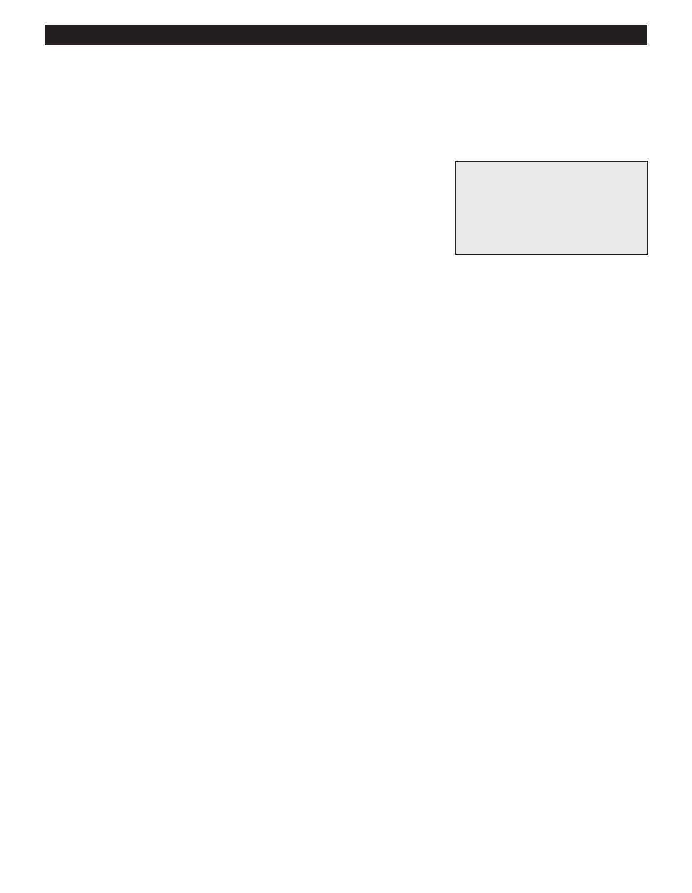

PA RT I C I PA N T R E S O U R C E G U I D E
Flush a Boiler of Rusty Water
Watching for signs of rust in the boiler, pipes, and terminal units and addressing them
quickly can prevent bigger problems down the road…or should we say, “down the pipe?”
Safety
Tools and Materials Needed
Make sure the power is off.
Lockout/tagout device
Use lockout/tagout procedures.
Screwdriver or special tool to
Wear eye protection.
open terminal unit
Wear gloves.
Bucket
How-to Steps
1. Shut off the power.
2. Lock and tag out the service panel.
3. Open the drain and the air vents on the highest radiator or baseboard units.
4. If the boiler has a manual feed, open it.
5. When the water runs clear, close the drain and vents and wait until pressure reaches 20 pounds per square inch (psi).
6. Bleed each radiator/baseboard unit until the pressure reaches 20 psi, then drain off the water. If the pressure falls below 12
psi, add more water.
7. Turn the power back on and test the system.
Notes:
54